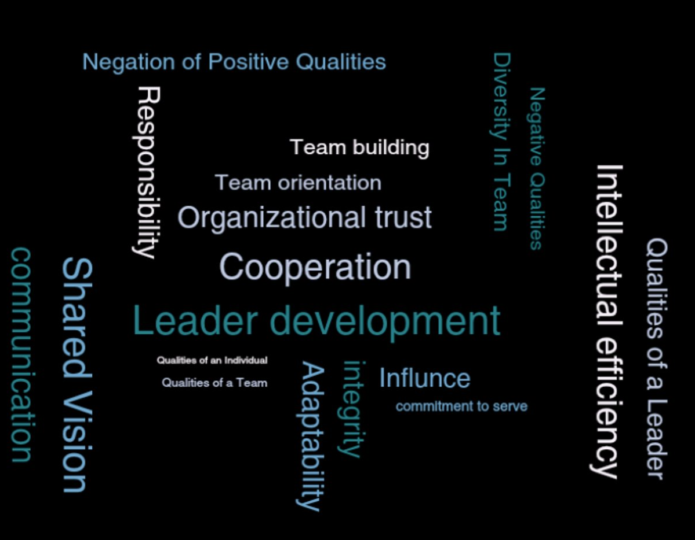
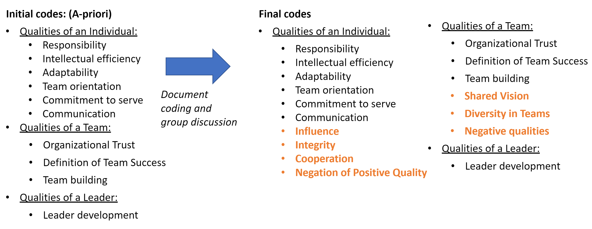
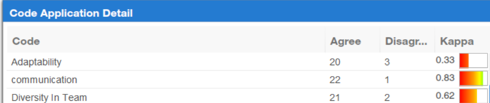

5. Primary Reading
Once the codes were selected, each document was read in its entirety using Dedoose. There were 319 excerpts and 506 code applications.
Flowchart
 {dim = c(8, 6)} A list of 55 documents from the Army and external sources that pertained to the role of an individual in unit performance were collected. The author, keywords, uses, a description, date written, and any notes were collected for each document.
{dim = c(8, 6)} A list of 55 documents from the Army and external sources that pertained to the role of an individual in unit performance were collected. The author, keywords, uses, a description, date written, and any notes were collected for each document.
10 documents were selected to be from a variety of sources, sectors, and time periods. Documents most relevant to the theme were chosen.
The documents selected can be found here
The 10 documents in the corpus were read a first time to determine major themes that emerged. A literature review was also conducted to determine possible biases that would influence the documents.
Possible Biases:
- Historic Army recruitment tests reinforced institutional bias and maintained segregation. Due to Jim Crow laws, black recruits had not received the same education.
- Until August 2014, a row of chairs was placed behind the female platoon at Marine recruit training for recruits who were too exhausted to stand, despite completing boot camp under the same conditions and requirements as their male peers.
- “Don’t ask, don’t tell” policy which barred openly LGBTQIA+ persons from joining the military was lifted September 20th, 2011. The law claimed, among other things, their presence would “create a risk (…) to unit cohesion”.
 After all of the documents were read, the codes were refined so that there were not multiple codes to cover the same idea.
Once the codes were selected, each document was read in its entirety using Dedoose. There were 319 excerpts and 506 code applications.
 Tests were conducted on Dedoose to measure inter-coder reliability. Readers outside of the project took a test to determine if their application of the codes matched that of the initial coder.
To begin conducting Natural Language Processing(NLP) on the documents, the corpus was uploaded as text files into R Studio. All of the documents were cleaned by making all of the words lowercase, removing non-letter charters, and removing white space. It was then decided that stop words(i.e. the, and, of) and any word less than four letters should be removed. Last names that were commonly referenced in documents were also removed. Then, all of the documents were legitimatized. Legitimization groups together multiple forms of the same word so that they can be analyzed as a single concept.
The corpus was split into documents and then paragraphs. The words in each paragraph were tokenized and the paragraph to which they belong was recorded. The amount of times word pairs occurred in each paragraph were recorded and the highest occurrences were recorded.
The term frequency, inverse document frequency was recorded for each document. This is calculated by multiplying the number of times each word appears in a given document and the inverse document frequency of the word in the corpus of documents. The final set of words shows which terms make each document unique from other documents in the corpus. #10. LDA
Latent Dirichlet Allocation is a form of topic modeling that is used to show topics that emerge within the corpus of documents and what words are associated with each topic. For the purpose of this project, it was selected to create 18 topics as 18 codes were discovered when manually reading the documents.
Based on the LDA model, codes were matched with the topics to see if the manually labeled documents coincided with the natural language processing.